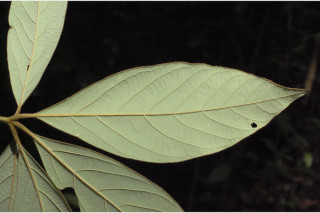
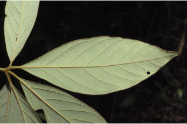
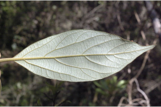
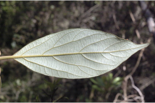

Trees up to 10 m tall.
10 ಮೀ.ವರೆವಿಗೆ ಬೆಳೆಯುವ ಮರಗಳು.
10 മീറ്റര് വരെ ഉയരമുളള മരങ്ങള്.
மரங்கள் 10 மீ. உயரம் வரை வளரக்கூடியது
Bark brown, lenticellate; blaze light orange.
ತೊಗಟೆ ಕಂದು ಬಣ್ಣದಲ್ಲಿರುತ್ತದೆ ಮತ್ತು ವಾಯು ವಿನಿಮಯ ಬೆಂಡು ರಂಧ್ರ ಸಮೇತವಿರುತ್ತದೆ; ಕಚ್ಚು ಮಾಡಿದ ಜಾಗ ತೆಳು ಕಿತ್ತಳೆ ಬಣ್ಣದಲ್ಲಿರುತ್ತದೆ.
ശ്വസനരന്ധ്രങ്ങളുളള, തവിട്ട് നിറത്തിലുളള പുറംതൊലി; വെട്ട്പാടിന് ഇളം ഓറഞ്ച് നിറമാണ്.
மரத்தின் பட்டை ப்ரவுன் நிறமானது, லெண்டிசெல் (பட்டைத்துளைகள்) உடையது; உள்பட்டை வெளிறிய ஆரஞ்சு நிறமானது.
Young branchlets terete, brown villous tomentose.
ಎಳೆಯ ಕಿರುಕೊಂಬೆಗಳು ದುಂಡಾಗಿರುತ್ತವೆ ಮತ್ತು ಕಂದು ಬಣ್ಣದ ಉದ್ದವಾದ ಮೃದುರೋಮಗಳಿಂದ ಕೂಡಿರುತ್ತವೆ.
കനത്തില് തവിട്ട് രോമിലമായ, ഉരുണ്ട ഇളംഉപശാഖകള്.
சிறிய நுனிக்கிளைகள் குறுக்குவெட்டுத் தோற்றத்தில் வளையமானது, ப்ரவுன் நிறமான உரோமங்களுடையது.
Leaves simple, subverticilate; petiole up to 2.5 cm long, planoconvex in cross section, brown villous tomentose; lamina 12-26 x 5-8.5 cm, elliptic - long elliptic, apex acute or slightly acuminate, base acute, margin entire, shining above, villous beneath, glabrous above; midrib slightly raised above; secondary_nerves strong, 8-12 pairs; tertiary_nerves, prominent, closely and horizontally_percurrent.
ಎಲೆಗಳು ಸರಳವಾಗಿದ್ದು, ಉಪತರಂಗಿತ ವ್ಯವಸ್ಥೆಯಲ್ಲಿರುತ್ತವೆ; ತೊಟ್ಟುಗಳು ದೃಢವಾಗಿದ್ದು 2.5 ಸೆಂ.ಮೀ. ವರೆಗಿನ ಉದ್ದ ಹೊಂದಿದ್ದು ಅಡ್ಡ ಸೀಳಿದಾಗ ಸಪಾಟ ಪೀನ ಮಧ್ಯದ ಆಕಾರದಲ್ಲಿದ್ದು ಕಂದು ಬಣ್ಣದ ದಟ್ಟ ಮೃದುತುಪ್ಪಳದಿಂದ ಕೂಡಿರುತ್ತವೆ; ಪತ್ರಗಳು 12-26 x 5-8.5 ಸೆಂ.ಮೀ. ಗಾತ್ರ ಹೊಂದಿದ್ದು ಅಂಡವೃತ್ತ-ಚತುರಸ್ರ , ಅಂಡವೃತ್ತದ ಆಕಾರದಲ್ಲಿರುತ್ತವೆ. ಪತ್ರದ ತುದಿ ಚೂಪಾಗಿ ಅಥವಾ ಕ್ರಮೇಣ ಚೂಪಾಗುವ ಮಾದರಿಯಲ್ಲಿದ್ದು,ಚೂಪಾದ ಬುಡ ಹೊಂದಿರುತ್ತವೆ;ಅಂಚು ನಯವಾಗಿರುತ್ತದೆ;ಪತ್ರಗಳ ಮೇಲ್ಮೈ ಪತ್ರದ ಮೇಲ್ಭಾಗದಲ್ಲಿ ಹೊಳಪನ್ನು ಹೊಂದಿದ್ದುತಳಭಾಗದಲ್ಲಿ ಉದ್ದವಾದ ಮೃದುರೋಮಗಳಿಂದ ಕೂಡಿರುತ್ತವೆ. ಪತ್ರದ ಮೇಲ್ಭಾಗ ರೋಮರಹಿತವಾಗಿರುತ್ತದೆ; ಮಧ್ಯನಾಳ ಪತ್ರದ ಮೇಲ್ಭಾಗದಲ್ಲಿ ತುಸು ಮೇಲೆದ್ದಿರುತ್ತದೆ; ಎರಡನೇ ದರ್ಜೆಯ ನಾಳಗಳು ದೃಢವಾಗಿದ್ದು 8-12 ಜೋಡಿಗಳಿರುತ್ತವೆ;ಮೂರನೇ ದರ್ಜೆಯ ನಾಳಗಳು ಪ್ರಮುಖವಾಗಿವಾಗಿರುತ್ತವೆ ಮತ್ತು ಸನಿಹವಾಗಿದ್ದು ಲಂಬ ರೇಖೆಗೆ ಸಮಕೋನದಲ್ಲಿರುತ್ತವೆ ಹಾಗೂ ಎಲೆದಿಂಡಿಗೆ ಅಡ್ಡವಾಗಿ ಕೂಡುವ ರೀತಿಯವು.
ലഘുവായ ഇലകള്, ഉപതരംഗിതമാണ്; കനത്തില് തവിട്ട് രോമിലമായതും, ഛേദത്തില് ഒരുഭാഗം പരന്നും മറുഭാഗം ഉരുണ്ടുമിരിക്കുന്ന ഘടനയുളള ഇലഞെട്ടിന് 2.5 സെ.മീ വരെ നീളം; പത്രഫലകത്തിന് 12 സെ.മീ മുതല് 26 സെ.മീ വരെ നീളവും 5 സെ.മീ മുതല് 8.5 സെ.മീ വരെ വീതിയും, ദീര്ഘവൃത്താകാര-നീളമുളള ദീര്ഘവൃത്താകാരം ആണ്; പത്രാധാരം നിശിതമാണ്, അരികുകള് അവിഭജിതമാണ്, മുകളില് തിളങ്ങുന്നതാണ്, കീഴെ കനത്തില് രോമാവൃതമാണ്, മുകളില് അരോമിലം; മുഖ്യസിര മുകളില് ഒരല്പ്പം ഉയര്ന്നതാണ്; 8 മുതല് 12 വരെ ജോഡി ദൃഢമായ ദ്വീതീയ ഞരമ്പുകള്; പ്രബലമായ ത്രിതീയ ഞരമ്പുകള്, അടുത്ത തിരശ്ചീന പെര്കറന്റ് വിധത്തിലാണ്.
இலைகள் தனித்தவை, சப்வர்டிசில்லேட்; இலைக்காம்பு 2.5 செ.மீ., நீளமானது, குறுக்குவெட்டுத் தோற்றத்தில் பிளேனோகான்வக்ஸ், ப்ரவுன் நிறமான உரோமங்களுடையது; இலை அலகு 12-26 X 5-8.5 செ.மீ., நீள்வட்டம் - நீண்ட நீள்வட்ட வடிவானது, அலகின் நுனி கூரியது அல்லது சிறிது அதிக்கூரியது, அலகின் தளம் கூரியது, அலகின் விளிம்பு முழுமையானது, அலகின் மேற்பரப்பு பளபளப்பானது, கீழ்பரப்பு உரோமங்களற்றது; மையநரம்பு மேற்பரப்பில் அலகின் பரப்பைவிட உயர்ந்தது; இரண்டாம் நிலை நரம்புகள் 8-12 ஜோடிகள், தெளிவானது, மூன்றாம் நிலை நரம்புகள் தெளிவானது, நெருக்கமான மற்றும் விளிம்பை நோக்கிய கிடைமட்டத்தில் இனையான பெர்க்கரண்ட்.
Flowers unisexual, dioecious, on lateral clusters; peduncles up to 0.5 cm.
ಹೂಗಳು ಏಕಲಿಂಗಿಗಳಾದ್ದು, ಪ್ರತ್ಯೇಕ ಸಸ್ಯಗಳಲ್ಲಿರುತ್ತವೆ ಮತ್ತು ಪಾರ್ಶ್ವದಲ್ಲಿನ ಗುಚ್ಛಗಳಲ್ಲಿರುತ್ತವೆ;ಪುಷ್ಪಮಂಜರಿ ವೃಂತ 0.5 ಸೆಂ. ಮೀ. ವರೆಗಿನ ಉದ್ದವನ್ನು ಹೊಂದಿರುತ್ತದೆ
0.5 സെ.മീ വരെ നീളമുളള തണ്ടുളള പാര്ശ്വ കൂട്ടങ്ങളായുണ്ടാകുന്ന പൂക്കള് ഏകലിംഗികളാണ്, ഡയീഷ്യസും.
மலர்கள் ஒர்பாலானவை, ஈரகம் கொண்டவை, கூட்டமாக பக்கவாட்டிலுமைந்தது; மஞ்சரி காம்பு 0.5 செ.மீ. நீளமானது.
Berry, globose, within the cup shaped fruiting_perianth tube; seed 1.
ಬೆರ್ರಿಗಳು ಗೋಳಾಕಾರದಲ್ಲಿದ್ದು ಬಟ್ಟಲು ಆಕಾರದ ಪುಷ್ಪಾವರಣದ ನಳಿಕೆಯೊಳಗೆ ಇರುತ್ತವೆ ಹಾಗೂ 1 ಬೀಜವನ್ನೊಳಗೊಂಡಿರುತ್ತವೆ.
ഒറ്റവിത്തുമാത്രമുളള കായ, കപ്പിന്റെ ആകൃതിയുളള പരിദളകുഴലിനകത്തുളള ഗോളാകാര ബെറിയാണ്.
முழுச்சதைகனி (பெர்ரி), கோளவடிவானது, கோப்பை போன்ற நிரந்தரமான ப்பீரியான்ந்த் குழாயினுள் அமைந்தது; விதை ஒன்றுடையது.


 

 
